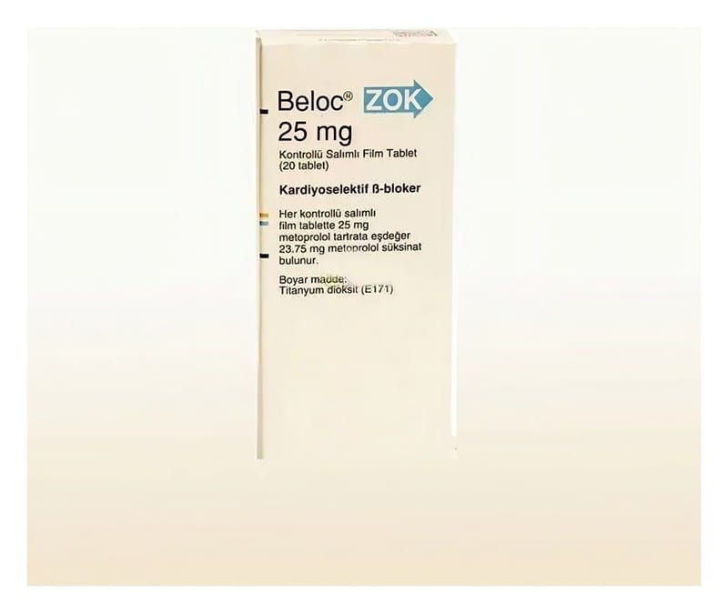

Beloc Zok 25 mg Kontrollü Salımlı Film Kaplı Tablet, 20 adet

Ne için kullanılır
KT · Bölüm 1BELOC®ZOK beyaz ila beyazımsı renkte, oval, bikonveks, iki tarafı da çentikli ve bir tarafında A/ß baskılı film kaplı tablettir. Çentik vasıtasıyla tablet eşit dozlara bölünebilir.
BELOC®ZOK 25 mg 20 tabletlik ambalajlarda sunulmaktadır.
Metoprolol fiziksel ve zihinsel çalışma dolayısıyla oluşan stres hormonlarının kalpteki etkisini azaltır. Bu sayede, bu koşullar altında kalp atım hızı (nabız azalır) yavaşlar. BELOC®ZOK aşağıdaki durumlarda kullanılır :
Yetişkinlerde: - yüksek kan basıncını önlemek için - göğüs ağrısını (anjina pektoris) önlemek için - kalp yetmezliğinde - bazı çarpıntılarda - düzensiz kalp aktivitesinin (aritmi) belirli türlerinde - daha önce kalp krizi geçirmiş hastalarda daha sonraki kalp krizi riskini ve ölüm riskini azaltmada - migrende koruyucu tedavide
6-18 yaş arası çocuklar ve ergenler: - yüksek kan basıncı tedavisinde